TRACKER'S GAMES OF THE YEAR 2023
I played a lot of video games this year. 56 of them! And because I can't be bothered making a Game of the Year video this year, I'm just going to write about them instead.
Shinobi '02
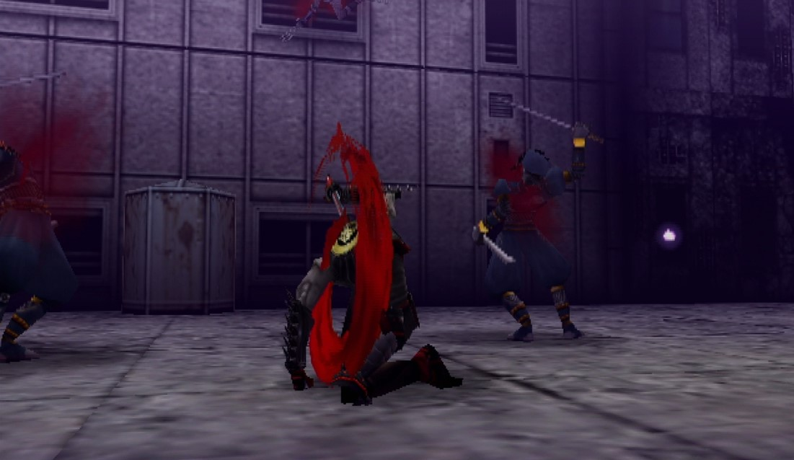
This game deserves a spot on this list just for Hotsuma's scarf technology, honestly. Shinobi's PS2 reboot is slick, stylish, and extremely satisfying to master. It's easily one of the best games I've played this year.
Hotsuma, this game's titular Shinobi, returns home from a trip to find Japan in ruins and his entire clan murdered by hellspawn. To make things worse, not too long into his journey the curse on his sword gets unsealed, and starts to sap his life away unless he keeps killing - and he's up against his friends, who're now reanimated corpses. As a result, the game is a balancing act of not just killing everything in your path, but doing it as fast as possible to keep the sword's hunger at bay. This is further emphasised by the game's 'TATE' system - if you kill 4 or more enemies in rapid succession, Hotsuma will pull off a stylish finishing move that provides far more souls to keep the sword's hunger sated. It also results in a hefty power boost to the sword, letting you melt through enemies like butter after enough kills. This is especially true of the bosses; every boss will throw mooks at you to keep you back, but if you dispatch them fast enough and take a swing at the boss, you can kill these bosses in a single hit! Actually pulling that off is much easier said than done - the timing is fairly strict - but there is nothing more satisfying than taking out all of the minions during the second boss (a giant spider/tiger hybrid), then jumping up to the big bad and slicing him clean in two. Hotsuma brings in plenty of classic Shinobi weaponry too, such as Shurikens to paralyze enemies, and various Ninjutsu that can turn the tide of battle.
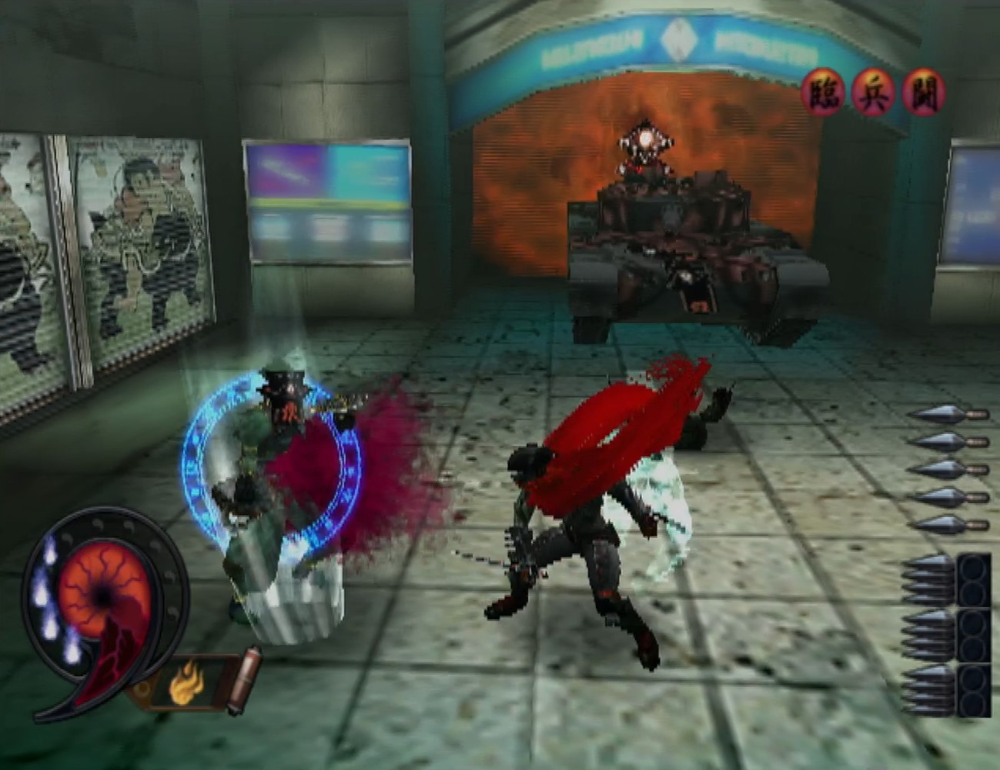
There's also a lot of platforming to do, which while somewhat clunky at times, makes the most of Hotsuma's moveset. You can run on walls, and pull off a quick dash that homes in on enemies (and refreshes every time you hit someone). This dash also has 'coyote time', meaning if the dash ends above a pit, you can jump out of it and dash again; small stuff like this really adds to how fun it is to control Hotsuma. You'll need to master the platforming and combat alike though, particularly as Shinobi's stages are completely devoid of checkpoints. While many encounters are mandatory to progress, this does lead to me sometimes weighing up whether speedrunning the stages is the better option, to try and reach the end before the sword can kill Hotsuma. While a very different way to play, it's actually very fun to see how fast you can race through the stages in its own right. Explorers also have something to do, as there's coins hidden throughout each level that will unlock bonus content, including extra characters. You can even unlock Joe Musashi, the original Shinobi - though be warned that the American release increases the amount of coins you need to get these unlockables, which is a bit of a shame.
Shinobi '02 is a brutally difficult, but incredibly satisfying time from SEGA's early third-party days. The gameplay loop is simply fun, and the presentation is effortlessly sleek (in particular, there's some fantastic music in here). You get into a routine of slicing down foes that feels almost like a macabre dance, and the finishing moves somehow don't wear out their welcome as quick as you'd think. It's probably helped by the fact they look so damn cool. It's also worth noting that the game's final boss is seemingly quite infamous for how damn hard it is, but as long as you keep the TATE system in mind, you'll slice through him eventually.
It's a shame this one doesn't get as much love as the other titles in the series, as I think it's definitely a highlight. I imagine the severe difficulty puts some people off, which is fair, but I'd highly recommend giving it a shot.
Bomb Rush Cyberfunk
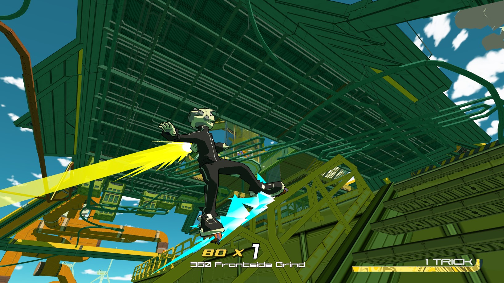
I absolutely love Jet Set Radio. It's probably my favourite Dreamcast game that doesn't involve a blue hedgehog, and artistically remains a huge inspiration to me. I once spent an entire week doing absolutely nothing but playing it to 100% completion. I really wanted that playable dog on rollerskates.
So I was cautiously optimistic when Bomb Rush Cyberfunk was first announced. I say cautiously because while it certainly looked the part, complete with Hideki Naganuma bringing some glorious trailer music, I'd been here before. Hover: Revolt of Gamers was once mooted as the spiritual successor to JSR, and then it released. It was not. Thankfully, BRC sticks the landing far, far better - almost a little too well, as if there's one point of contention with this game, it's that it's maybe a little too blatantly Jet Set Radio. Either way, it certainly gave me what I wanted; Bomb Rush blew my expectations out of the water, with a gorgeous world full of things to do tricks off of, stellar character designs, and of course a bloody fantastic soundtrack curated from a wide range of artists. In Bomb Rush, your aim is to go 'All City' - essentially, to control all of the turf in the town by becoming the dominant gang. I was happy enough with this setup, but soon enough it turns out things are a lot more messed up than a mere gang war, and I was genuinely surprised by how much further the story went than settling for just a blatant JSR copy. There's plenty of twists here, that had me playing just to see what was next.
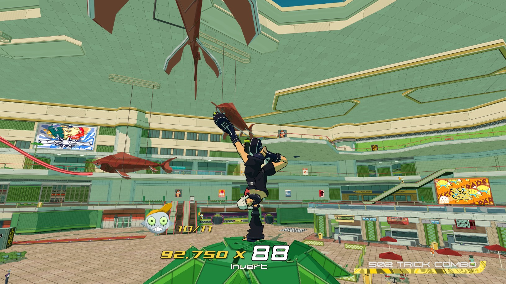
Bomb Rush is a joy to move around in. The controls feel supremely fine-tuned, and it always felt like a dropped combo was my fault; at least compared to Jet Set Radio, a game I adore but can also admit has some slightly archaic controls. Pulling off tricks is fairly simple, but keeping those combos going becomes a matter of covering as much distance as you can, and looking good doing it, for as long as possible. JSR-style infinite combos see diminishing returns here, as the game rewards you for seeking out new rails to grind, new walls to ride, and even spots to tag with the wide array of graffiti on offer. And as you tackle each gang, it also becomes a case of doing it as fast as possible! Bomb Rush succeeds in making you feel awesome for pulling off these crazy-long tricks runs - and it's a thrill just to watch, helped by the fact the game simply looks fantastic. JSR's cel-shaded artstyle hasn't aged a day, and BRC rocks it. Colours are bright and bold, characters pop out from the background with bold outlines, and special effects pop out further still. The characters all sport animations that make me want to dance just looking at them, and the setting is built up with billboards, stores, houses, shopping complexes, bus stations, that all feel so lived in. The shopping mall stage is a highlight, as you scale the place along escalators, lighting fixtures, through the warehouse, all the way to the sort of dizzying heights that I probably looked up at in the Trafford Centre as a kid and pondered "what's up there?" The neon glow of Mataan had me grinning ear to ear the moment I stepped into it, and the future funk that kicked in was also very much appreciated.
There's also an attempt to mix some combat into the JSR formula... it admittedly doesn't really stick the landing as well as its tricks, but also isn't broken enough to be outright offensive either. Graffiti still plays a role, though it feels like the game strikes more of a balance between it and tricks than JSR did. There's no 'fail' state for graffiti, but your inputs determine what picture you'll actually paint (from a pretty huge gallery), so it's worth remembering the inputs for your favourites. This also keeps the gameplay moving, whereas in JSR you'd sometimes rock up to a tag with less cans than needed and have to awkwardly shuffle off mid-tag to get more; or worse, the enemy AI would pop in at the worst time and knock you right out of it. BRC keeps the flow going all the time.
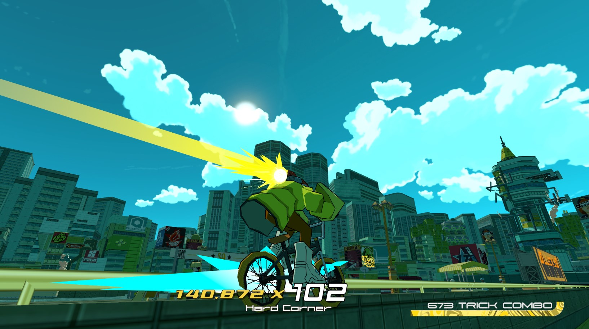
And it'd be remiss to not highlight the music, as it's arguably one of the biggest reasons to have wanted a new Jet Set Radio game. Hideki Naganuma is certainly on his a-game here, with 'GET ENUF' and 'DA PEOPLE' being instant hits. 'Feel the Funk', 'Next to Me', 'Condensed Milk', 'Funk Express' and more make up some of the other choice picks on the soundtrack, but there's really not much in way of 'bad' stuff here. Maybe slightly odd to open the game with a song that consists of some guy with a vocoder saying 'ASS' over and over, but still.
On the whole, Bomb Rush scratches the itch I'd had with flying colours. Just messing around and achieving nothing at all is fun; seeing how high the score can go, how much ground you can cover in a single combo, and meticulously planning out new routes to extend those combos even further. there's plenty to see and do, such as getting all the music unlocked to play whenever you want, sleek new skins for your gear, graffiti to tag the town with - and even secret areas, such as an extremely well-hidden easter egg in Versum Hill. I had a great time with Bomb Rush Cyberfunk, and I'd recommend it to anyone, let alone fans of Jet Set Radio.
F-Zero GX
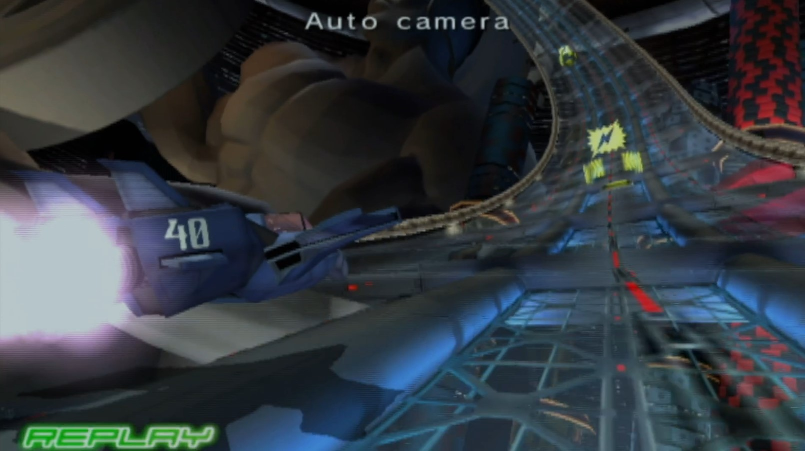
I finally understand why we haven't got another F-Zero, besides that one that just reuses the SNES game's assets. It's because Nintendo know they got outdone at their own game, by their former worst enemy no less.
F-Zero GX is some of the best arcade racing SEGA's ever put out. It feels like more than just a race, and more of a full-blown fight for survival. The sense of speed as the world flies past you, the thrill of diving into huge jumps and cutting sharp corners, watching your pilot's icon rattle and spin as you blitz through the course; the game does an incredible job selling the immersion. Knocking other racers flying off the course is so hilariously gratifying, and the Story Mode offers a steep challenge that's euphoric to overcome. It's also matched with a presentation that suits this series to a T - fairly campy, with some downright comedic voice acting and questionable vocal tracks. This game wears that aspect of SEGA on its sleeve, but it works so damn well.
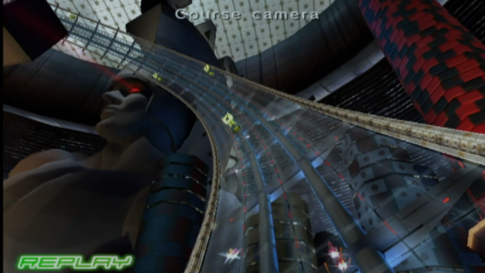
F-Zero's controls are relatively simple to pick up, on paper - but mastering them, especially in the heat of a race, will have your hands feeling like pretzels. But when it all comes together, and you pull off that perfect run (as the glorious soundtrack pushes you to victory), it's just an amazing feeling. Tracks take on a variety of forms - winding cylinders, huge tunnels, waterfalls, city skylines, and more besides. As you barrel through the tracks, you're constantly threading the needle to dodge the myriad of obstacles thrown your way at 1200mph. There's nothing quite like it, and as much as I've enjoyed games like Fast RMX, I can see now that there's truly nothing to scratch the itch in the same way this game does.
There really isn't a ton to say about this one, honestly - it's just an extremely solid arcade racer, as you'd expect from SEGA.
Dragon's Dogma: Dark Arisen
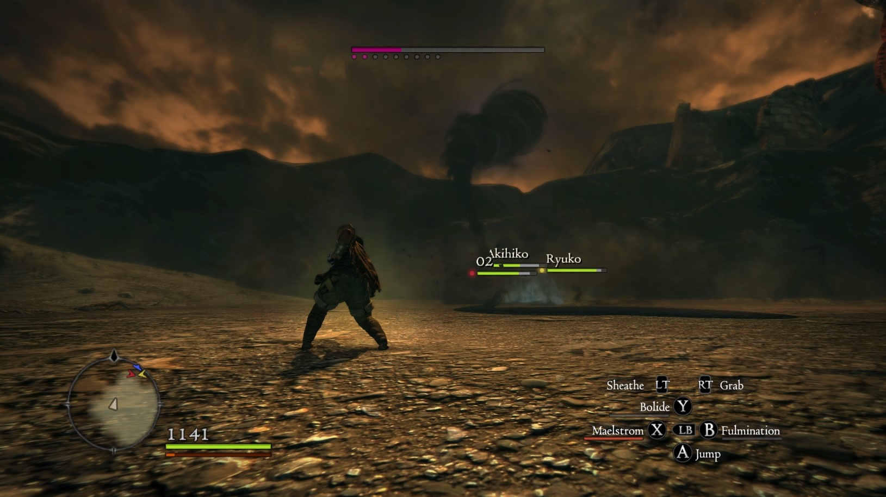
You know how much I love high fantasy stuff? Like, ye olde wizards and sorcerers, medieval knights, dragons, orcs, all that?
I don't. It's fucking boring.
Anyway, Dragon's Dogma is one of the greatest games I've ever played, probably.
Dragon's Dogma starts out with you having your goddamn heart literally torn out of your chest. You survive, because you're awesome, and then set off on a quest to become the coolest person who ever lived. And from there, the world is basically your oyster to dick around in. I opted to become a sorcerer, because it meant I could hit stuff from a safe distance who doesn't like shooting lightning at people? And then by the end of the game, I was summoning goddamn TORNADOES and flinging my enemies around like ragdolls. You're also never alone in Dragon's Dogma, as the game largely revolves around a 'pawn' system, where you adventure with up to 3 AI controlled partners, one of which is a permanent ally you create. Obviously I opted to make my character/pawn combo out of my OCs, but for your other pawns you can head online to find characters created by other players. This does mean you can just head into the pawn realm immediately and get pawns who're levelled up enough to have beaten the game twice, but the AI isn't exactly smart enough for that to break the game. My party for the bulk of the game consisted of another sorcerer named Ryuko, and Akihiko from Persona 3. If he was practically naked, sans some strategically pointless armour. And had a jester hat.
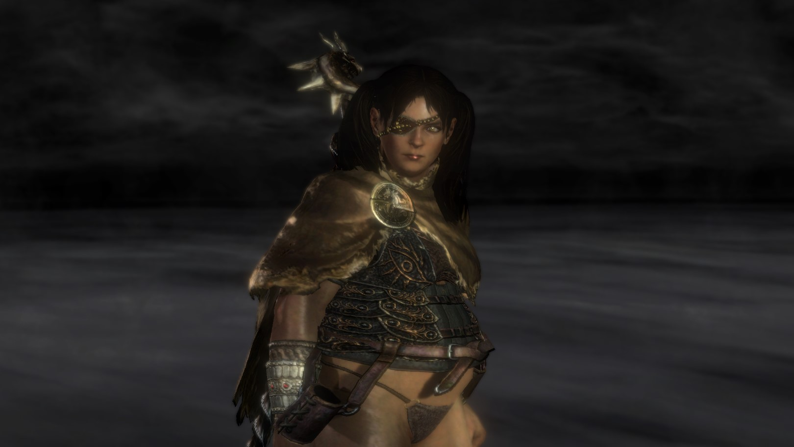
The game definitely starts slowly (including an escort mission that genuinely takes about 20 gruelling minutes), and at first I was worried I was going to bounce off it. But once you reach the first town, the game starts to really open up; the quests start to get more interesting, such as offering small dungeon-style areas to plunder. You'll also be given more classes to try out, and a hefty cast of NPCs to talk to. And without saying too much, your relationship with the other characters becomes pretty important later on, so it's worth helping the folks you like. As the game continues, you'll find yourself tackling a variety of nasties, and gargantuan beasts such as Griffins, Ogres, Hydras, and more. It all plays out across a massive world, but one that's actually pretty fun to travel across. There are castles and fortresses to storm in search of loot (or arse-kicking), abandoned mines to plunder, and you can even jump down the well in your hometown if you feel like it. You'll find stuff hidden away in chests, new quests to embark on, monsters to kill in their hundreds - it's not really anything new for the genre, but I had a lot more fun travelling here than I did in Elden Ring. In fact, in many ways Dragon's Dogma felt like the kind of game I'd hoped Elden Ring would be, going in blind. That's probably what I get for not playing any Souls games, but even so. The controls give you a fair bit more freedom in movement than those games, and brutal difficulty isn't really the focus. To be honest, I suspect it's really not hard to break this game in half, but that's just part of the fun.
Even after beating the game, it still feels like I've only played half of it, as I understand the melee-focused classes are basically like playing a different game. A huge deal is made out of the fact you can climb on enemies to attack their weak spots, Shadow of the Colossus style; something I never did, given I was a sorcerer. I want to go back and do a proper run with the other classes at some point, and thankfully the game facilitates this with a very generous NG+ mode. It basically lets you start the game pulling off those crazy endgame tornadoes, which is very fun to watch.
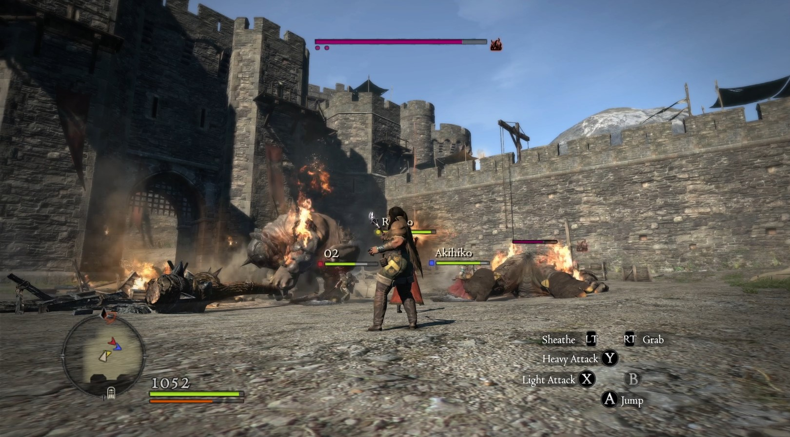
Simply put, I was engrossed in Dragon's Dogma. The world, the atmosphere, and the sheer entertainment of becoming stronger and stronger in such dramatic ways, makes for a game that had me hooked. Just a single playthrough was enough for me to have loved it, but the fact I've really only scratched the surface in my 30 hours of playing it is really impressive. In some ways, it does feel 'of its era' - the colour palette is very PlayStation 3 - but I greatly enjoyed my time in this world. And I timed my playthrough hilariously well too, as I don't have to endure the 10 year wait die-hard fans have for a sequel either - it's out next year!
The Legend of Heroes: Trails in the Sky
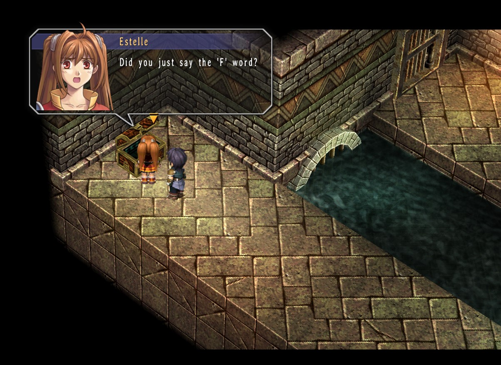
Every single year, I write up one of these Games of the Year things. And every year, I write the same thing - Falcom. Do. Not. Miss.
After cutting my teeth on Gurumin, Popful Mail and Zwei, this year it was finally time to start the series Falcom are actually beloved for - The Legend of Heroes. I put it off for a while, simply on the basis that I'm not much of an RPG guy. But as has been pointed out to me several times by friends now, I say that and then enjoy almost every RPG I play. And Trails is maybe the best I've played so far.
Set in the Liberl Kingdom, Trails in the Sky is a two-parter that follows the adventures of Estelle Bright, and her adopted brother, Joshua. They're enlisted into the Junior Bracer Guild, basically heroes for hire, and set out to travel across the Kingdom in order to graduate to being full-on Bracers, following in the footsteps of Estelle's father. It doesn't take long for things to start going amiss though, as an airship carrying Estelle's father mysteriously vanishes, and a crew of expert thieves show up on the scene to cause trouble for the townsfolk. And from there, things only escalate further; by the end of the first chapter, the entire fate of the Kingdom hangs in the balance, and after that the plot takes an even bigger turn that I won't spoil. It had me glued to my chair, which is probably why I somehow finished the whole thing within like, a week. And these games aren't short!
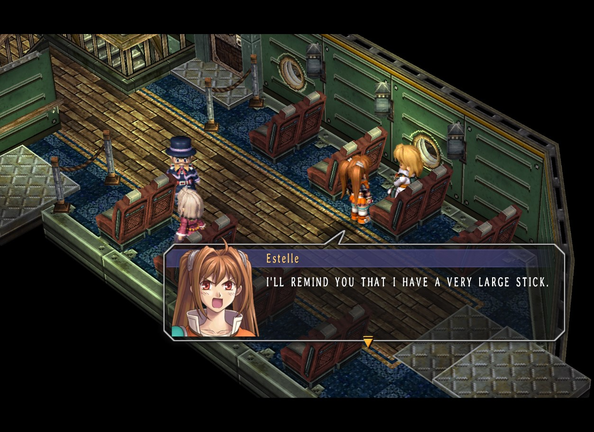
In Trails, you're given a huge amount of control over your character's abilities using the 'Orbment' system. If you want Estelle to be flinging fireballs, you'll want to specialise in Red Quartz, for example - fairly standard stuff. But how you place the Quartz into the 'circuit' each character will affect what kind of moves you'll get, and this makes experimenting a lot of fun. You're not locked into your choices either, which I really appreciate; if you decide one of your party members could really do with rocking some ice spells right about now, you can generally configure them to suit that. You're not given total freedom, granted, as some characters' circuits are simply pre-disposed to certain elements - but I had a ton of fun trying out different combinations, and unlocking some supremely powerful spells this way. Over the course of the game, you'll also be constantly meeting (and leaving) new party members, and it's quite a cast. From the ultra-polite Kloe, to the firey Agate, and the adorable Tita, there's so many great characters in this game - and it does feel like they're all fairly fleshed out, and given a chance to shine.
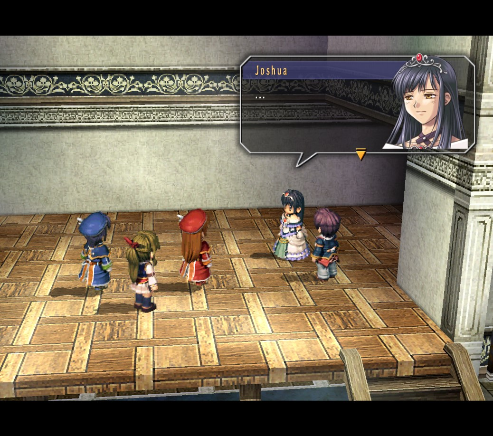
Trails is infamous for how wordy it is; localising this game was a herculean task. But it's also an extremely charming script, with Estelle being cut from the same sassy cloth as previous Falcom heroines such as Parin and Mail. I laughed a lot playing this game, but it also knows when to get serious and dropped moments that seriously tugged on my heartstrings. There is one element of the plot that is maybe a little bit... odd to watch unfold, but manages to build to a pretty satisfying climax regardless. The game's presentation is also extremely charming, with cute, pre-rendered representations of the characters used during gameplay and some superb artwork for dialogue sequences - there's lots of good faces here, to say the least. The music is also absolutely sublime, as you'd expect from Falcom Sound Team JDK. Silver Will is bloody glorious in all its incarnations - including GaMetal's amazing remix of it. Really, my only major complaint with this game is that the Second Chapter's difficulty curve feels damn near vertical. It's very easy to find yourself getting stomped by bosses out of nowhere, and it's very difficult to course-correct once you're there. I might not have beaten this game were it not for the extremely helpful 'Retry Offset' feature, that basically slices the enemy's defence to ribbons every time you retry a battle. You can turn this off, but I was actually pretty happy to see this was a feature - it meant I could reach the end, while still keeping some challenge.
Trails in the Sky is a wonderful time. Late-game difficulty curve aside, I enjoyed almost every second of what I played, and I can't wait to get stuck into the rest of the series at some point. And I should probably get on with Ys while I'm at it...
HONORABLE MENTIONS
AKA stuff that's pretty good but I cannot be bothered writing at length about, because I've been sat here long enough
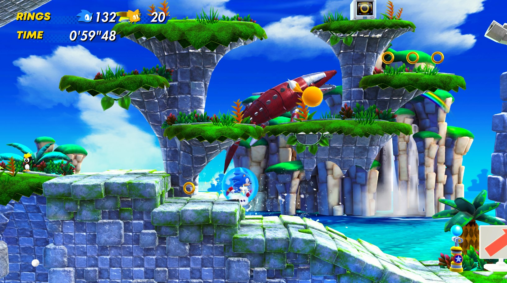
Sonic Superstars isn't exactly the best Classic Sonic game by any stretch of the imagination - in fact I'd play literally any of the Mega Drive Sonic games (or Mania) long before going back to it. But it's also probably the best attempt Sonic Team's made at 2D Sonic in about 20 years, and definitely does a lot of things right that I'd lost hope of ST ever managing to again.
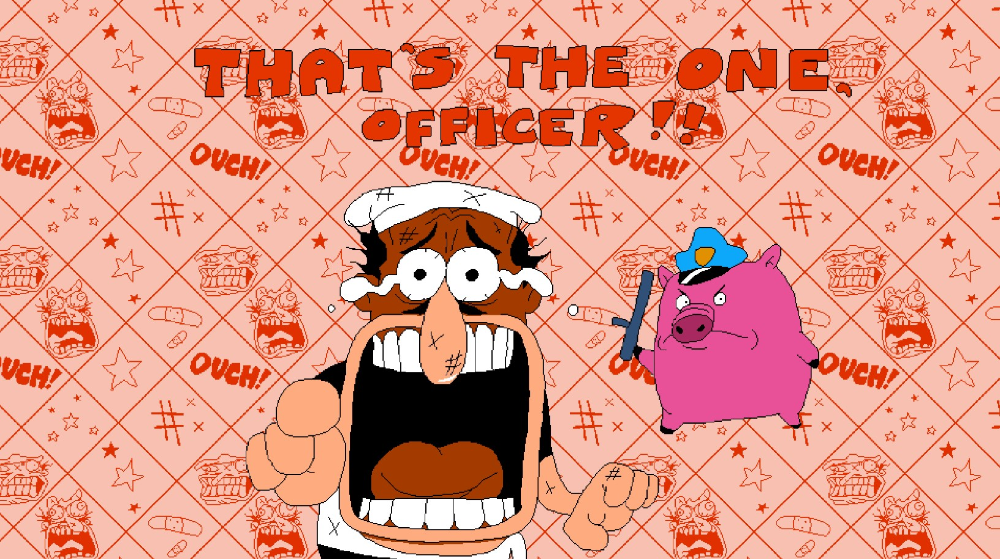
Pizza Tower is an absolutely hilarious game that made me smile at basically every turn. Fans of 2D platformers, and especially ones who enjoyed Wario Land 4, owe it to themselves to try this one.
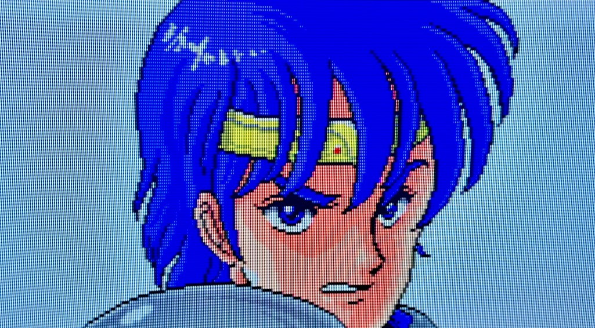
Phantasy Star II is probably not actually a very good game. But I played it with the 2x EXP hack (that's basically so essential that SEGA have bundled it in with just about every reissue they've done) and a healthy supply of maps, and I had a pretty good time!
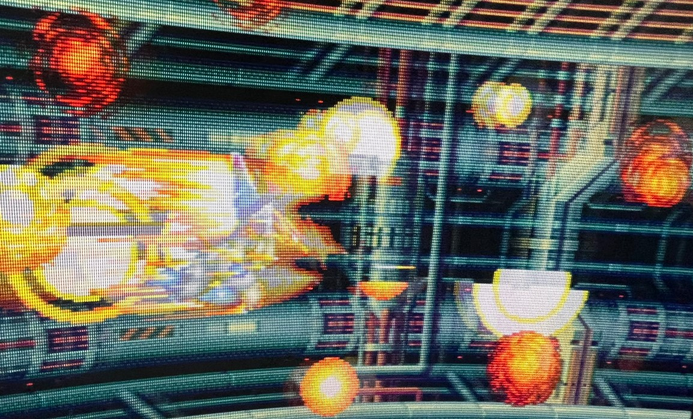
Alien Soldier is one of those video games that makes you want to yell "HOLY SHIT I LOVE VIDEO GAMES". It's just so good.
And yeah, Mario Wonder and Zelda: Tears of the Kingdom were pretty good too. But they're on everyone's list! You're here for like, McDonald's Treasure Land Adventure, right?